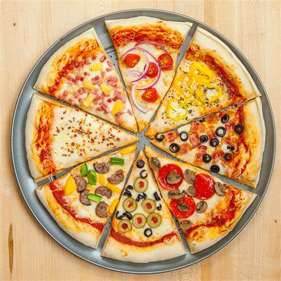

Pizza Recipe

Description
Pizza is a crowd-pleasing choice for busy weeknights and fun weekend dinners alike.
But you don't have to rely on restaurants or takeout for top-notch pizza. Read on for tips on how to make your own pizza at home.
Ingredients
- Pizza Crust
- Pizza Sauces
- Pizza Toppings
- Cheese
Steps
- Heat the oven.
- Form the pizza dough and place it on a peel dusted with a little flour or cornmeal.
- Slip the pizza onto the hot pizza stone.
- After 5 minutes of baking, check the pizza.
- The pizza is done when the cheese is melted to a medium-to-dark brown.